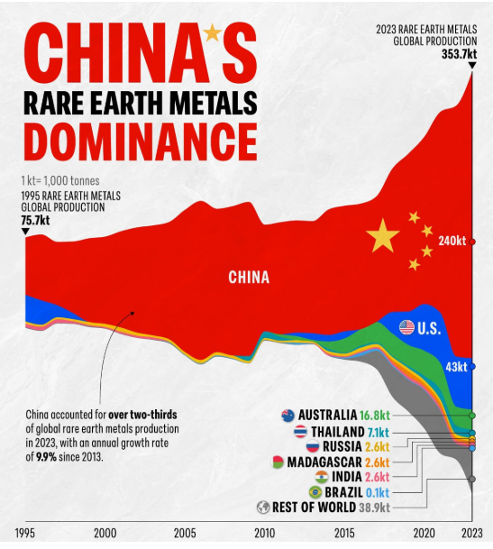

Portfolio
CC1. Hosting: display charts in your own site
CC2. Building: create your own visualisations
CC3. Policy debate: use a visualisation in policy commentary
The Economic Risk of Dependence on China.
It is urgent that countries develop public policies to prevent all of them from becoming dependent on China as the sole supplier of these materials.
China's share increases as the production chain progresses, reaching its peak dominance in magnet production.
The values in the chart are an estimate of the amounts at risk by industry if China implements its policy.
CC4. Replication: re-create, then improve, someone else’s chart
Original

Source: Visual Capitalist, with data from the Energy Institute, Statistical Review of World Energy 2024.
Replica
Improved version
The original chart, while eye-catching, interprets missing data as a 0, so it did not provide clear figures to illustrate the difference between China's production and that of the rest of the world over the years.
CC5. Accessing data: API and scraper
API chart
- Base URL: https://api.worldbank.org/v2/
- Elements needed to call the data: The required elements are the country (country/aus), the indicator I need (indicator/TX.VAL.MMTL.ZS.UN), and then the format in which I need the data (?format=json&per_page=100).
- Data returned: With those three elements, the API returned the data in JSON format, but it wasn’t entirely tidy because, for example, “country” and “indicator” are containers with fields inside them (each has an “id” and a “value”), rather than simple values.
- Full URL used:
https://api.worldbank.org/v2/country/aus/indicator/TX.VAL.MMTL.ZS.UN?format=json&per_page=100
Scraper chart
- Notebook: Google Colab notebook
- Comment:I scraped the Chilean Tax Service website for the value of the UF, a unit of account that is indexed to inflation. I downloaded the data and imported it to create a graph showing the percentage changes throughout this year.
CC6. Loops: UK devolution dashboard
- Notebook: Google Colab notebook